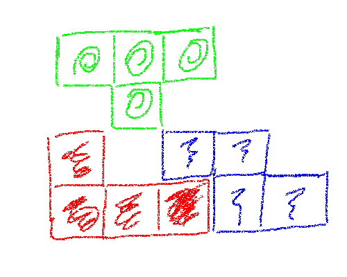

library(torch)
l <- nn_linear(3, 1)Introducción

Inicialmente, empezamos aprendiendo sobre las bases de torch programando una red neuronal sencilla “desde el principio”, haciendo uso solamente de una de las características de torch: los tensores. Ahora, vamos a simplificar muchísimo la tarea reemplazando la retro-propagación con autograd. Hoy vamos a modularizar la red en dos sentidos: en el habitual y en uno mucho mas literal: las operaciones de matrices de bajo nivel son reemplazadas por módulos de torch.
Módulos
En otras plataformas (por ejemplo keras), se puede estar acostumbrado a distinguir entre módulos y capas. En torch, ambos son instancias de nn_module(), y por lo tanto, se tienen algunos métodos en común. Para aquellos que piensan en términos de “modelos” y “capas”, se dividió artificialmente esta sección en dos partes. En realidad no hay dicotomía: nuevos módulos pueden estar compuestos de módulos existentes en niveles arbitrarios de recursión.
Modulos Base (Capas)
En lugar de escribir una transformación afin manualmente: x$mm(w1) + b1 por ejemplo, como lo hemos hecho hasta ahora, podemos crear un modulo lineal. El siguiente fragmento de código crea una instancia de una capa lineal que espera como entrada tres variables y devuelve una salida por observación:
El módulo tiene dos parámetros, “Peso” y “Sesgo”. Ambos vienen pre-inicializados:
l$parameters$weight
torch_tensor
0.1647 0.5118 -0.1313
[ CPUFloatType{1,3} ][ requires_grad = TRUE ]
$bias
torch_tensor
0.4457
[ CPUFloatType{1} ][ requires_grad = TRUE ]Los módulos pueden ser invocados; la invocación de un módulo ejecuta el método forward(), el cual, para una capa lineal, multiplica (matricialmente) la entrada por los pesos y suma el sesgo.
Intentemos lo siguiente:
data <- torch_randn(10, 3)
out <- l(data)Como se esperaba, la salida out ahora contiene algunos datos:
out$data()torch_tensor
0.8072
0.1507
0.9358
0.2930
0.7551
0.1299
-0.4496
-0.2296
-0.2524
0.5204
[ CPUFloatType{10,1} ]Adicionalmente, este tensor sabe que requiere ser hecho siempre que se le pida calcular gradientes:
out$grad_fnAddmmBackward0Nótese la diferencia entre los tensores retornados por los módulos y los creados por comandos nuestros. Cuando creamos los tensores, se requiere definir requires_grad = TRUE para activar el calculo de gradientes. Con los módulos, torch asume correctamente que deseamos realizar la retro-propagación en algún momento.
Por ahora, no hemos invocado backward() aun. Así que aún no se ha calculado ningún gradiente:
l$weight$gradtorch_tensor
[ Tensor (undefined) ]l$bias$gradtorch_tensor
[ Tensor (undefined) ]Cambiemos esto:
out$backward()Error in (function (self, inputs, gradient, retain_graph, create_graph) : grad can be implicitly created only for scalar outputs
Exception raised from _make_grads at ../torch/csrc/autograd/autograd.cpp:47 (most recent call first):
frame #0: c10::Error::Error(c10::SourceLocation, std::__cxx11::basic_string<char, std::char_traits<char>, std::allocator<char> >) + 0x6b (0x7fd6b34452eb in /home/jhonatan/R/x86_64-pc-linux-gnu-library/4.1/torch/lib/./libc10.so)
frame #1: c10::detail::torchCheckFail(char const*, char const*, unsigned int, char const*) + 0xd1 (0x7fd6b3440e41 in /home/jhonatan/R/x86_64-pc-linux-gnu-library/4.1/torch/lib/./libc10.so)
frame #2: <unknown function> + 0x38f064f (0x7fd6888f064f in /home/jhonatan/R/x86_64-pc-linux-gnu-library/4.1/torch/lib/./libtorch_cpu.so)
frame #3: torch::autograd::backward(std::vector<at::Tensor, std::allocator<at::Tensor> > const&, std::vector<at::Tensor, std::allocator<at::Tensor> > const&, c10::optional<bool>, bool, std::vector<at::Tensor, std::allocator<at::Tensor> > const&) + 0x45 (0x7fd6888f2035 in /home/jhonatan/R/x86_64-pc-linux-gnu-library/4.1/torch/lib/./libtorch_cpu.so)
frame #4: <unknown function> + 0x395ccfe (0x7fd68895ccfe in /home/jhonatan/R/x86_64-pc-linux-gnu-library/4.1/torch/lib/./libtorch_cpu.so)
frame #5: at::Tensor::_backward(c10::ArrayRef<at::Tensor>, c10::optional<at::Tensor> const&, c10::optional<bool>, bool) const + 0x49 (0x7fd6862fc8d9 in /home/jhonatan/R/x86_64-pc-linux-gnu-library/4.1/torch/lib/./libtorch_cpu.so)
frame #6: _lantern_Tensor__backward_tensor_tensorlist_tensor_bool_bool + 0x17b (0x7fd6b3d4d035 in /home/jhonatan/R/x86_64-pc-linux-gnu-library/4.1/torch/lib/liblantern.so)
frame #7: <unknown function> + 0x5947c5 (0x7fd6b77947c5 in /home/jhonatan/R/x86_64-pc-linux-gnu-library/4.1/torch/libs/torchpkg.so)
frame #8: std::_Function_handler<std::unique_ptr<std::__future_base::_Result_base, std::__future_base::_Result_base::_Deleter> (), std::__future_base::_Task_setter<std::unique_ptr<std::__future_base::_Result<void>, std::__future_base::_Result_base::_Deleter>, std::__future_base::_Task_state<std::function<void ()>, std::allocator<int>, void ()>::_M_run()::{lambda()#1}, void> >::_M_invoke(std::_Any_data const&) + 0x35 (0x7fd6b77965b5 in /home/jhonatan/R/x86_64-pc-linux-gnu-library/4.1/torch/libs/torchpkg.so)
frame #9: std::__future_base::_State_baseV2::_M_do_set(std::function<std::unique_ptr<std::__future_base::_Result_base, std::__future_base::_Result_base::_Deleter> ()>*, bool*) + 0x2d (0x7fd6b77968ed in /home/jhonatan/R/x86_64-pc-linux-gnu-library/4.1/torch/libs/torchpkg.so)
frame #10: <unknown function> + 0x99f68 (0x7fd6c2899f68 in /usr/lib/x86_64-linux-gnu/libc.so.6)
frame #11: EventLoop<void>::run() + 0x1a4 (0x7fd6b7798634 in /home/jhonatan/R/x86_64-pc-linux-gnu-library/4.1/torch/libs/torchpkg.so)
frame #12: <unknown function> + 0xdc2b3 (0x7fd6bfedc2b3 in /usr/lib/x86_64-linux-gnu/libstdc++.so.6)
frame #13: <unknown function> + 0x94b43 (0x7fd6c2894b43 in /usr/lib/x86_64-linux-gnu/libc.so.6)
frame #14: <unknown function> + 0x126a00 (0x7fd6c2926a00 in /usr/lib/x86_64-linux-gnu/libc.so.6)¿Porque se produce un error? autograd espera que el tensor de salida sea un escalar, mientras que en nuestro ejemplo tenemos un tensor de tamaño (10, 1). Este error no ocurriría en la practica, donde se trabaja por baches de entradas (en ocasiones, solo un único bache). Pero aun así, es interesante ver como resolver esto.
Para hacer que nuestro ejemplo funcione, se introduce un paso adicional, calculo de una media virtual. LLamemoslo avg. Si tal media fuera calculada, su gradiente con respecto a l$weight podría ser obtenida vía regla de la cadena:
\[ \frac{\partial avg}{\partial w} = \frac{\partial avg}{\partial out} \frac{\partial out}{\partial w} \]
De las cantidades de la derecha, estamos interesados en la segunda. Se necesita proveer la primera, de la forma en que esto podría verse si realmente estuviéramos calculando la media:
d_avg_d_out <- torch_tensor(10)$`repeat`(10)$unsqueeze(1)$t()
out$backward(gradient = d_avg_d_out)Ahora, l$wieght$grad y l$bias$grad sí contienen los gradientes:
l$weight$gradtorch_tensor
-27.2703 -23.9543 9.2242
[ CPUFloatType{1,3} ]l$bias$gradtorch_tensor
100
[ CPUFloatType{1} ]Adicionalmente a nn_linear(), torch provee mucho de todo los que se espera de las capas mas comunes. Aún así, algunas tareas se resuelven por una sola capa ¿como combinarlas? o, en lenguaje común: ¿como construir modelos?
Módulos contenedores (“Modelos”)
Bien, los modelos son módulos que contienen otros módulos. Por ejemplo, si todas las entradas se supone que fluyen atraves de los mismos nodos y a lo largo de las mismas vías, entonces nn_sequentiual() puede usarse para construir un grafo sencillo.
Por ejemplo:
model <- nn_sequential(
nn_linear(3, 16),
nn_relu(),
nn_linear(16, 1)
)podemos usar la misma técnica de arriba para ver los parámetros del modelo (dos matrices de pesos y dos vectores de sesgo):
model$parameters$`0.weight`
torch_tensor
0.5355 -0.0213 0.4647
0.1244 -0.4988 -0.4234
0.2565 0.2977 0.2528
0.5149 -0.0701 -0.0679
-0.4810 0.1394 -0.2943
-0.4708 0.4047 -0.5536
0.0525 -0.4987 0.3909
-0.4642 0.2297 -0.1231
-0.4173 -0.2474 -0.4889
-0.2684 -0.4513 0.2920
0.3599 -0.5580 -0.0656
-0.5073 0.0704 0.4467
0.1711 0.5273 0.2958
-0.0286 -0.4735 -0.1189
0.0977 0.2855 -0.2965
0.0773 -0.3401 0.5104
[ CPUFloatType{16,3} ][ requires_grad = TRUE ]
$`0.bias`
torch_tensor
0.1984
0.5505
-0.4983
0.3101
-0.3564
0.0365
-0.4945
0.3637
0.1587
0.5755
0.1083
0.2867
0.0973
-0.2592
0.1121
-0.0347
[ CPUFloatType{16} ][ requires_grad = TRUE ]
$`2.weight`
torch_tensor
Columns 1 to 10-0.2272 -0.0307 0.1232 -0.1382 -0.0439 0.1983 0.1353 0.0458 -0.2376 0.2480
Columns 11 to 16 0.2444 -0.1623 -0.0844 -0.0362 -0.1659 -0.0595
[ CPUFloatType{1,16} ][ requires_grad = TRUE ]
$`2.bias`
torch_tensor
0.1119
[ CPUFloatType{1} ][ requires_grad = TRUE ]Para inspeccionar un parámetro individual, hay que usar la posición en el modelo secuencial. Por ejemplo:
model[[1]]$biastorch_tensor
0.1984
0.5505
-0.4983
0.3101
-0.3564
0.0365
-0.4945
0.3637
0.1587
0.5755
0.1083
0.2867
0.0973
-0.2592
0.1121
-0.0347
[ CPUFloatType{16} ][ requires_grad = TRUE ]Y del mismo modo que antes en nn_linear(), este módulo puede ser invocado directamente sobre los datos:
out <- model(data)En un módulo compuesto (modelo) como este, invocar backward() hará la retro-propagación a través de todas las capas:
out$backward(gradient = torch_tensor(10)$`repeat`(10)$unsqueeze(1)$t())
model[[1]]$bias$gradtorch_tensor
-13.6346
-2.7662
0.0000
-6.9083
-1.3165
5.9494
4.0576
3.2053
-16.6351
22.3234
14.6633
-9.7406
-3.3776
-1.4462
-9.9561
-4.1668
[ CPUFloatType{16} ]Y ubicando el módulo compuesto (modelo) en la GPU moverá todos los tensores allí:
model$cuda()
model[[1]]$bias$gradtorch_tensor
-13.6346
-2.7662
0.0000
-6.9083
-1.3165
5.9494
4.0576
3.2053
-16.6351
22.3234
14.6633
-9.7406
-3.3776
-1.4462
-9.9561
-4.1668
[ CUDAFloatType{16} ]Veamos ahora cómo, usando nn_sequential() se puede simplificar nuestra red neuronal de ejemplo.
Red neuronal simple usando módulos
### generación de datos de entrenamiento ---------------
# dimensiones de la entrada (número de características de entrada)
d_in <- 3
# dimensiones de la salida (número de características de predicción)
d_out <- 1
# número de observaciones en el conjunto de entrenamiento
n <- 100
# Creación de datos aleatorios
x <- torch_randn(n, d_in)
y <- x[, 1, NULL] * 0.2 - x[, 2, NULL] * 1.3 - x[, 3, NULL] * 0.5 + torch_randn(n, 1)
# Nótese que se usan NULL, pero podría reemplazarse por el parámetro drop = FALSE, sirve para asegurarse que no se pierde las dimensiones originales de los tensores al hacer la selección
### Definición de la red neuronal
# dimensiones de la capa oculta
d_hidden <- 32
model <- nn_sequential(
nn_linear(d_in, d_hidden),
nn_relu(),
nn_linear(d_hidden, d_out)
)
### Parámetros de la red
learning_rate <- 1e-4
### Ciclo de entrenamiento
for (t in 1:200){
### ------ propagación hacia adelante---------
y_pred <- model(x)
### ------ cálculo de perdidas --------
loss <- (y_pred - y)$pow(2)$sum()
if(t %% 10 ==0)
cat("Epoch: ", t, " Loss: ", loss$item(), "\n")
### ------- retro-propagación ---------
# puesta a cero de los gradientes antes de iniciar la retro-propagación
model$zero_grad()
# Cálculo de los gradientes para los parámetros del modelo
loss$backward()
### ------- actualizacion de los pesos -------
# se ejecuta con with_no_grad() porque en esta parte no se desea almacenar el calculo
# automático del gradiente
# Se actualiza cada parámetro con su respectivo `grad`
with_no_grad({
model$parameters %>% purrr::walk(function(param) param$sub_(learning_rate * param$grad))
})
}Epoch: 10 Loss: 248.7436
Epoch: 20 Loss: 178.2965
Epoch: 30 Loss: 141.0255
Epoch: 40 Loss: 122.7597
Epoch: 50 Loss: 114.196
Epoch: 60 Loss: 110.0747
Epoch: 70 Loss: 107.8717
Epoch: 80 Loss: 106.5085
Epoch: 90 Loss: 105.5374
Epoch: 100 Loss: 104.7832
Epoch: 110 Loss: 104.1391
Epoch: 120 Loss: 103.556
Epoch: 130 Loss: 102.988
Epoch: 140 Loss: 102.452
Epoch: 150 Loss: 101.9532
Epoch: 160 Loss: 101.4878
Epoch: 170 Loss: 101.0473
Epoch: 180 Loss: 100.6296
Epoch: 190 Loss: 100.2312
Epoch: 200 Loss: 99.85239 La propagación hacia adelante se ve mucho mas simple ahora; sin embargo, aun tenemos que hacer el ciclo sobre los parámetros del modelo y la actualización de cada uno manualmente. Posiblemente, usted puede sospechar que torch provee abstracciones para funciones comunes de funciones de perdidas. En la próxima entrega de esta serie (que ademas será la final), vamos a tratar estos dos puntos, haciendo uso de las perdidas y optimizadores de torch. Nos veremos entonces!